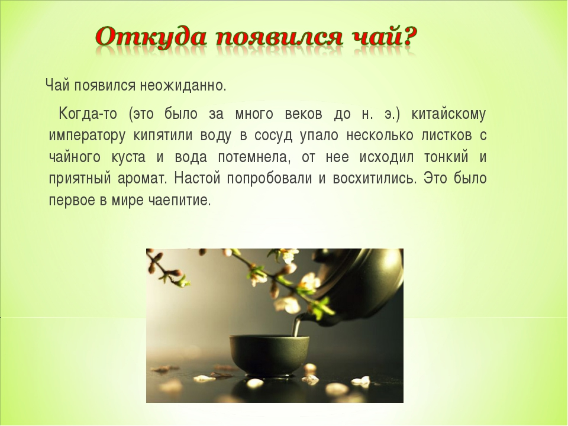
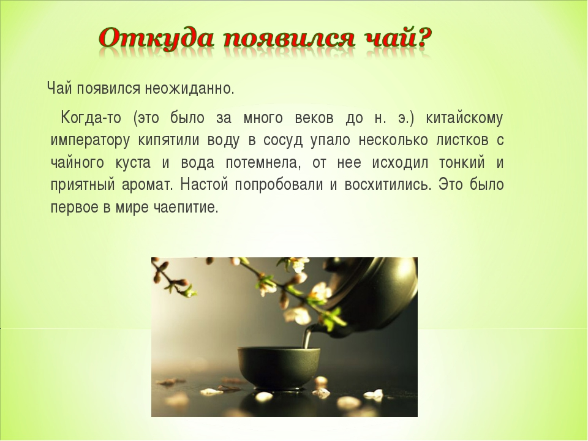

ВСЁ ПРО ЧАЙ


Оттуда, через Среднюю Азию, слово и проникло в Россию.
А вот в европейские страны, чай и слово, его обозначающее пришло из Юго-Восточной части страны, где название напитка звучало как "тьа". Это не случайно, ведь англичане и голландцы проникли в страну морским путем, а не по суше, как русские купцы.
За без малого 400 лет в нашей стране сложилась целая культура русского чаепития. Появились новые отрасли - производство самоваров и фарфоровых чайных сервизов. Чай стал неотъемлемой частью русской трапезы, сюжетом живописных полотен. Он стал настолько популярен, что появились подделки. В больших и малых городах открывались чайные.
Еще в начале 19 века предпринимались попытки выращивания чая в Российской Империи. Первое растение было выращено в Крыму, в Никитском ботаническом саду. Документы свидетельствуют, что это произошло в 1817 г. Позднее, чайные плантации появились в Грузии и Азербайджане.
А вот в европейские страны, чай и слово, его обозначающее пришло из Юго-Восточной части страны, где название напитка звучало как "тьа". Это не случайно, ведь англичане и голландцы проникли в страну морским путем, а не по суше, как русские купцы.
За без малого 400 лет в нашей стране сложилась целая культура русского чаепития. Появились новые отрасли - производство самоваров и фарфоровых чайных сервизов. Чай стал неотъемлемой частью русской трапезы, сюжетом живописных полотен. Он стал настолько популярен, что появились подделки. В больших и малых городах открывались чайные.
Еще в начале 19 века предпринимались попытки выращивания чая в Российской Империи. Первое растение было выращено в Крыму, в Никитском ботаническом саду. Документы свидетельствуют, что это произошло в 1817 г. Позднее, чайные плантации появились в Грузии и Азербайджане.